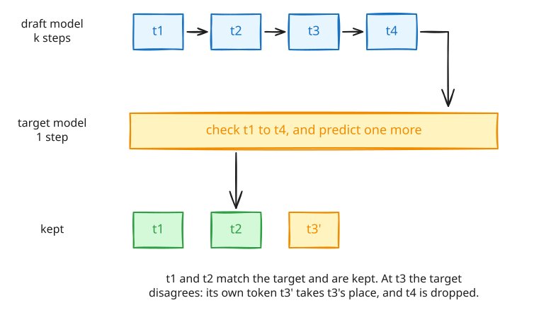
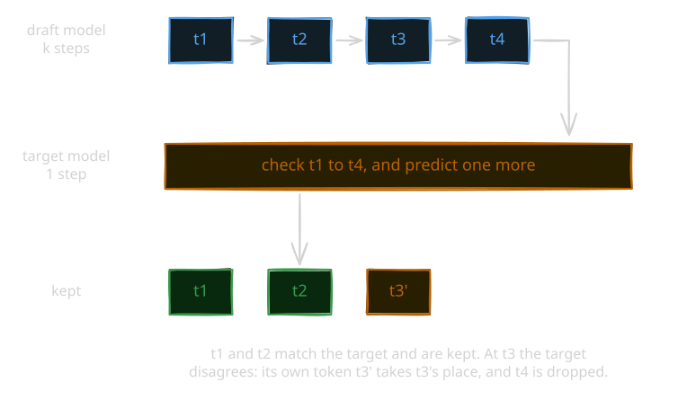

5.5 Speculative decoding


Decoding produces one token per step of the model, and at small batch sizes each step is memory-bound: Section 4.3 showed that a step for several tokens costs little more than a step for one. Speculative decoding uses that spare capacity. A small, fast draft model guesses the next few tokens, and the large target model checks all the guesses in one step. Each guess the target agrees with is an extra token from that one target step, and with greedy decoding the output is exactly what the target alone would produce.
This section implements it with SmolLM2-135M drafting for SmolLM2-360M, a larger model from the same family, and measures when it pays off.
Show the setup 19 lines
import logging
import time
import warnings
import numpy as np
import plotly.graph_objects as go
from max.pipelines import AutoTokenizer
from minillm import viz
from minillm.device import pick_device
from minillm.config import MODEL_ID, LlamaConfig
from minillm.model import load_model
from minillm.step import ContiguousCache, StepModel, compile_step, run_step
from minillm.weights import load_checkpoint
logging.getLogger("max").setLevel(logging.ERROR)
warnings.filterwarnings("ignore", message="The eager interpreter failed")
DEVICE = pick_device() # a GPU if MAX finds one, otherwise the CPU
TARGET_ID = "HuggingFaceTB/SmolLM2-360M-Instruct"
Two changes to the step model
Verification needs the target’s prediction after every guessed token, not
only the last, so the target’s step returns logits for all positions. When
the target rejects a guess, the keys and values computed for the rejected
tokens must be dropped, so the cache gets a truncate method.
Show AllLogitsStepModel, TruncatableCache, build 30 lines
class AllLogitsStepModel(StepModel):
def forward(self, tokens, positions, mask, past):
x = self.model.embed_tokens(tokens)
new_kv = []
for layer, layer_past in zip(self.model.layers, past, strict=True):
x, kv = layer(x, positions, mask, layer_past)
new_kv.append(kv)
return self.lm_head(self.model.norm(x)), new_kv
class TruncatableCache(ContiguousCache):
def truncate(self, length: int) -> None:
for entry in self.layers:
entry[0], entry[1] = entry[0][:length], entry[1][:length]
def build(model_id: str):
config = LlamaConfig.from_pretrained(model_id)
model = load_model(
config, load_checkpoint(model_id), DEVICE, AllLogitsStepModel
)
return config, compile_step(model, config, DEVICE)
draft_config, draft = build(MODEL_ID)
target_config, target = build(TARGET_ID)
print(
f"draft: {draft_config.num_hidden_layers} layers x {draft_config.hidden_size}, "
f"target: {target_config.num_hidden_layers} layers x {target_config.hidden_size}"
)
draft: 30 layers x 576, target: 32 layers x 960
Both models share a tokenizer, which this kind of speculative decoding requires: the target must read the draft’s token IDs as the same tokens.
The baseline: the target alone
tokenizer = AutoTokenizer(MODEL_ID)
prompt = tokenizer(["The three primary colors are"])["input_ids"][0]
N = 48
def target_alone() -> tuple[list[int], float]:
cache, ids = TruncatableCache(target_config), list(prompt)
start = time.perf_counter()
logits = run_step(target, [cache], [ids], DEVICE)
while True:
ids.append(int(logits[0, -1].argmax()))
if len(ids) - len(prompt) == N:
break
logits = run_step(target, [cache], [[ids[-1]]], DEVICE)
return ids[len(prompt) :], time.perf_counter() - start
reference, reference_time = target_alone()
print(f"{N / reference_time:.1f} tokens/s")
print(tokenizer.decode(reference))
2.5 tokens/s
red, blue, and yellow. These colors can be combined in various ways to create other colors. For example, by mixing red and blue, you get purple. Similarly, by mixing red and yellow, you get orange. By mixing blue
Draft, then verify


Each round:
- The draft model generates
ktokens greedily, one step each. Its first step also feeds in any accepted tokens it hasn’t seen yet. - The target runs one step over the last accepted token plus the
kguesses, and returns its own greedy choice after each of them. - Guesses are accepted from the left for as long as they match the
target’s choice. At the first mismatch, the target’s choice replaces the
guess. If all
kmatch, the target’s choice after the last one comes free. So every round yields between 1 andk + 1tokens. - Both caches are truncated to the accepted tokens, which discards the keys and values of rejected guesses.
Because every emitted token is the target’s own greedy choice, the output is identical to the target alone. Sampling versions accept or reject each guess with a probability test that keeps the output distributed exactly as the target’s own samples would be.
Show speculative 42 lines
def speculative(
k: int, log: list | None = None
) -> tuple[list[int], float, int, int]:
target_cache, draft_cache = (
TruncatableCache(target_config),
TruncatableCache(draft_config),
)
ids = list(prompt)
rounds = accepted = 0
start = time.perf_counter()
logits = run_step(target, [target_cache], [ids], DEVICE)
ids.append(int(logits[0, -1].argmax()))
if log is not None: # for the figure below: where each token came from
log.append(("prefill", ids[-1]))
while len(ids) - len(prompt) < N:
guesses = []
logits = run_step(
draft, [draft_cache], [ids[draft_cache.length :]], DEVICE
)
for i in range(k):
guesses.append(int(logits[0, -1].argmax()))
if i < k - 1:
logits = run_step(draft, [draft_cache], [[guesses[-1]]], DEVICE)
checks = run_step(
target,
[target_cache],
[ids[target_cache.length :] + guesses],
DEVICE,
)[0]
choices = checks[-(k + 1) :].argmax(-1)
n = 0
while n < k and guesses[n] == int(choices[n]):
n += 1
ids += guesses[:n] + [int(choices[n])]
if log is not None:
log += [("accepted", t) for t in guesses[:n]]
log.append(("bonus" if n == k else "corrected", int(choices[n])))
rounds += 1
accepted += n
target_cache.truncate(len(ids) - 1)
draft_cache.truncate(min(draft_cache.length, len(ids) - 1))
return ids[len(prompt) :][:N], time.perf_counter() - start, rounds, accepted
print(
f"{'k':>2} {'same output':>11} {'target steps':>12} {'accepted':>9} {'tokens/s':>9}"
)
print(f"{'-':>2} {'-':>11} {N:>12} {'-':>9} {N / reference_time:>9.1f}")
results = {}
for k in [2, 4, 6]:
out, seconds, rounds, accepted = speculative(k)
results[k] = (rounds, accepted)
print(
f"{k:>2} {str(out == reference):>11} {rounds:>12} {accepted / (rounds * k):>9.0%} {N / seconds:>9.1f}"
)
assert out == reference and rounds < N
k same output target steps accepted tokens/s
- - 48 - 2.5
2 True 21 64% 2.2
4 True 15 58% 1.4
6 True 15 41% 1.2
Look inside the run with k = 4. Each chip is one output token. The first,
in yellow, comes from the target’s prefill. Blue chips are draft guesses the
target accepted, orange ones are the target’s corrections where a guess was
wrong, and green ones are the extra token a round earns when all four
guesses are right. Hover over a chip for its round:
Show the code 23 lines
log = []
speculative(4, log)
log = log[:N]
kinds = {
"prefill": viz.CHIP_COLORS[3],
"accepted": viz.CHIP_COLORS[0],
"corrected": viz.CHIP_COLORS[1],
"bonus": viz.CHIP_COLORS[2],
}
titles, current = [], 0
for kind, _ in log:
titles.append(
"the target's prefill"
if kind == "prefill"
else f"round {current}: {kind}"
)
current += kind != "accepted"
viz.tokens(
[tokenizer.decode([t]) for _, t in log],
[t for _, t in log],
colors=[kinds[kind] for kind, _ in log],
titles=titles,
)
The output matches the target alone, and the target runs far fewer steps: 15 to
21 verification rounds instead of 47 decode steps. Even so, on this page’s
machine (an Apple-silicon Mac with a Metal GPU) every k was slower than the
target alone, at about 1 to 2 tokens/s against about 2.5. Treat these numbers
as an example: yours depend on your hardware and vary from run to run.
A timeline shows where the time goes. Run the target alone and the speculative
loop with k = 4 once more, and time every call to run_step. Each bar is one
step, blue for the target and orange for the draft; hover over a target step in
the second row to see how many tokens its round produced:
Show run_step 19 lines
events, untimed = [], run_step
def run_step(step_fn, caches, new_tokens, device):
start = time.perf_counter()
logits = untimed(step_fn, caches, new_tokens, device)
model = "draft" if step_fn is draft else "target"
events.append((model, start, time.perf_counter(), len(new_tokens[0])))
return logits
try:
target_alone()
baseline_events, events = events, []
round_log = []
speculative(4, round_log)
spec_events = events
finally:
run_step = untimed
Show the code 68 lines
# Tokens each round produced: its accepted guesses plus the target's own token.
per_round, accepted = [], 0
for kind, _ in round_log[1:]:
if kind == "accepted":
accepted += 1
else:
per_round.append(accepted + 1)
accepted = 0
rows = {"target alone": baseline_events, "speculative, k = 4": spec_events}
traces = {
"target": ([], [], [], [], viz.BLUE),
"draft": ([], [], [], [], viz.ORANGE),
}
ends = []
for row, row_events in rows.items():
t0 = row_events[0][1]
verify = 0
for index, (model, start, end, n) in enumerate(row_events):
y, base, width, hover, _ = traces[model]
y.append(row)
base.append(start - t0)
width.append(end - start)
if index == 0:
what = f"target prefill, {n} tokens"
elif model == "draft":
what = "draft step, 1 token"
elif row == "target alone":
what = "target decode step, 1 token"
else:
what = f"target verifies {n} tokens; round {verify + 1} yields {per_round[verify]}"
verify += 1
hover.append(f"{what}: {(end - start) * 1000:.0f} ms")
ends.append((row, row_events[-1][2] - t0))
fig = go.Figure(
[
go.Bar(
y=y,
x=width,
base=base,
orientation="h",
name=f"{model} step",
marker=dict(color=color, line=dict(color=viz.SURFACE, width=1)),
hovertext=hover,
hoverinfo="text",
)
for model, (y, base, width, hover, color) in traces.items()
]
+ [
go.Scatter(
x=[end for _, end in ends],
y=[row for row, _ in ends],
mode="text",
text=[f" {N} tokens in {end:.1f} s" for _, end in ends],
textposition="middle right",
showlegend=False,
hoverinfo="skip",
)
]
)
fig.update_layout(
title=f"Every step of generating {N} tokens, in wall-clock time",
barmode="overlay",
height=300,
xaxis=dict(title="seconds", rangemode="tozero"),
yaxis=dict(autorange="reversed", showgrid=False),
margin=dict(r=140),
)
viz.show(fig)
In the second row, an orange draft step is about as wide as a blue target step, and a target step that verifies five tokens costs about the same as one that decodes a single token, as the cost model below assumes. A round spends four draft steps to earn between one and five tokens, so the steps the target saves are paid back, and more, by the draft.
When it pays off
A round costs k draft steps plus one target step. If a draft step costs a
fraction \(c\) of a target step, and a round yields \(\bar{n}\) tokens on
average, the speedup over the target alone is
\[\text{speedup} \approx \frac{\bar{n}}{1 + k\,c}\]
This assumes the target verifies k + 1 tokens in about the time of a
one-token step. Measure \(c\) for these two models:
def ms_per_decode_step(step, config) -> float:
cache = TruncatableCache(config)
run_step(step, [cache], [prompt], DEVICE)
start = time.perf_counter()
for _ in range(10):
run_step(step, [cache], [[42]], DEVICE)
return (time.perf_counter() - start) / 10 * 1000
c = ms_per_decode_step(draft, draft_config) / ms_per_decode_step(
target, target_config
)
print(f"c = {c:.2f}")
for k, (rounds, accepted) in results.items():
tokens_per_round = (accepted + rounds) / rounds
print(
f"k={k}: {tokens_per_round:.2f} tokens per round -> predicted speedup {tokens_per_round / (1 + k * c):.2f}x"
)
c = 0.69
k=2: 2.29 tokens per round -> predicted speedup 0.96x
k=4: 3.33 tokens per round -> predicted speedup 0.89x
k=6: 3.47 tokens per round -> predicted speedup 0.68x
Plot the predicted speedup against the draft’s relative cost \(c\), using the
acceptance measured for each k. Above the dashed line, speculation is
faster than the target alone; the dotted line marks the \(c\) of these two
models:
Show the code 32 lines
cs = np.logspace(-2, 0, 60)
fig = go.Figure()
for (k, (rounds, accepted)), color in zip(results.items(), viz.SERIES):
per_round = (accepted + rounds) / rounds
fig.add_trace(
go.Scatter(
x=cs,
y=per_round / (1 + k * cs),
name=f"k = {k}",
line_color=color,
hovertemplate=f"k = {k}, c = %{{x:.2f}}: %{{y:.2f}}x<extra></extra>",
)
)
fig.add_hline(y=1, line=dict(color=viz.INK_SECONDARY, dash="dash"))
fig.add_vline(
x=c,
line=dict(color=viz.INK_SECONDARY, dash="dot"),
annotation_text=f"these models, c = {c:.2f}",
annotation_position="top left",
)
fig.update_layout(
title="Predicted speedup of speculative decoding",
height=420,
xaxis=dict(
title="draft step cost / target step cost, c (log scale)",
type="log",
dtick=1,
range=[-2.05, 0.05],
),
yaxis=dict(title="speedup over the target alone", rangemode="tozero"),
)
viz.show(fig)
Here a draft step costs most of a target step, far more than the draft’s 2.7
times fewer parameters suggest. The two models have almost the same depth,
30 and 32 layers, and at this size much of each layer’s time is fixed per-step
work that doesn’t shrink with the layer’s width. Part of that fixed work is this
engine’s own: run_step packs and copies every layer’s keys and values on the
host at each step, so the measured \(c\) includes that host-side packing too. So
the k draft steps in a round cost more than the target steps they save, and
the cost model predicts speculation at or below the speed of the target alone.
The measured runs were slower still, but the conclusion is the same. A draft’s depth matters as much as its parameter count.
Speculative decoding pays off when the draft is cheap (small \(c\)), its
guesses are usually accepted (large \(\bar{n}\)), and verifying k + 1
tokens costs about one target step. A cheap draft can be a 1B model drafting
for a 70B target, or a small head trained on the target’s own hidden states,
as in Medusa, EAGLE, and multi-token prediction (MTP). Cheap verification
holds for memory-bound decoding on GPUs and less so on a busy CPU.
With \(c \approx 0.05\) and the acceptance measured above, the same code would run
about two to three times as fast as the target alone, as the chart shows. MAX
Serve’s speculative decoding uses drafts that read the target model’s hidden
states, such as EAGLE and MTP, selected with --speculative-method. The
handbook’s
speculative decoding
page compares the variants.
Exercises
- Plug different \(c\) values into the formula with the measured acceptance
rates. For which \(c\) does each
kbreak even? - Change the prompt to something more predictable, such as counting from 1
to 50. How do acceptance and the best
kchange? - Make
kadaptive: increase it after a fully accepted round and decrease it after an early rejection. Does it help?
What you built
Chapter 5 is complete. Your engine schedules requests with continuous batching, stores keys and values in a paged cache, and shares cached prefixes between requests, and a separate loop speculates with a draft model for a single sequence. MAX Serve is built from the same parts, with the kernels and scheduling that make them fast on GPUs. Chapter 6 returns to the model and extends it to newer architectures.